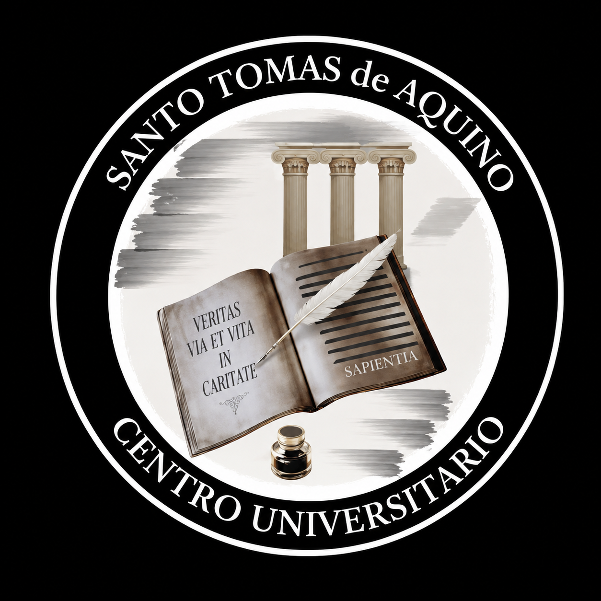

Desde la Coordinación del Centro de Estudiantes Universitarios Santo Tomás de Aquino queremos acompañarte durante todo el trayecto académico que has decidido emprender.
Sabemos que iniciar y sostener una carrera universitaria implica asumir nuevos desafíos, organizar tiempos de estudio, comprender procedimientos institucionales y adaptarse a las exigencias propias de la formación superior. Por ello, ponemos a disposición nuestra experiencia, compromiso y vocación de servicio para brindarte orientación, apoyo e información en cada etapa de tu recorrido académico.
Nuestro objetivo es que ningún estudiante transite este camino en soledad. Creemos firmemente en la cooperación, la solidaridad académica y el acompañamiento entre pares como herramientas fundamentales para fortalecer el aprendizaje y favorecer la permanencia universitaria.
A través de este espacio podrás encontrar información útil, orientación académica y recursos destinados a facilitar tu desempeño como estudiante de Derecho.
Nos encontramos a tu disposición para responder consultas, colaborar en la búsqueda de soluciones y acompañarte en las distintas situaciones que puedan surgir durante tu formación.
Orientación sobre procesos de inscripción a carreras, materias, exámenes finales y demás trámites académicos requeridos por la institución universitaria.
Información relativa al estado, conformación y actualización del legajo estudiantil, así como asesoramiento sobre la documentación requerida para su correcta integración.
Asistencia para la obtención, renovación o gestión del carnet universitario, incluyendo requisitos, procedimientos y consultas relacionadas con su utilización.
Acceso a información vinculada con calendarios académicos, mesas examinadoras, asignación de aulas, horarios de cursada y cronogramas institucionales.
Orientación para el acceso y utilización de las plataformas virtuales de enseñanza, recuperación de credenciales, navegación por aulas virtuales y descarga de material académico.
Información sobre el funcionamiento de la Biblioteca del Centro de Estudiantes Universitarios Santo Tomás de Aquino, acceso a bibliografía digital, materiales de consulta, apuntes y recursos académicos disponibles para los estudiantes.
Si necesitás asistencia sobre cualquiera de los temas mencionados o sobre cualquier otra cuestión relacionada con tu trayectoria universitaria, podés comunicarte con la Coordinación del Centro de Estudiantes Universitarios Santo Tomás de Aquino mediante los canales de contacto habilitados en esta página.
Estamos para acompañarte durante todo tu recorrido académico.